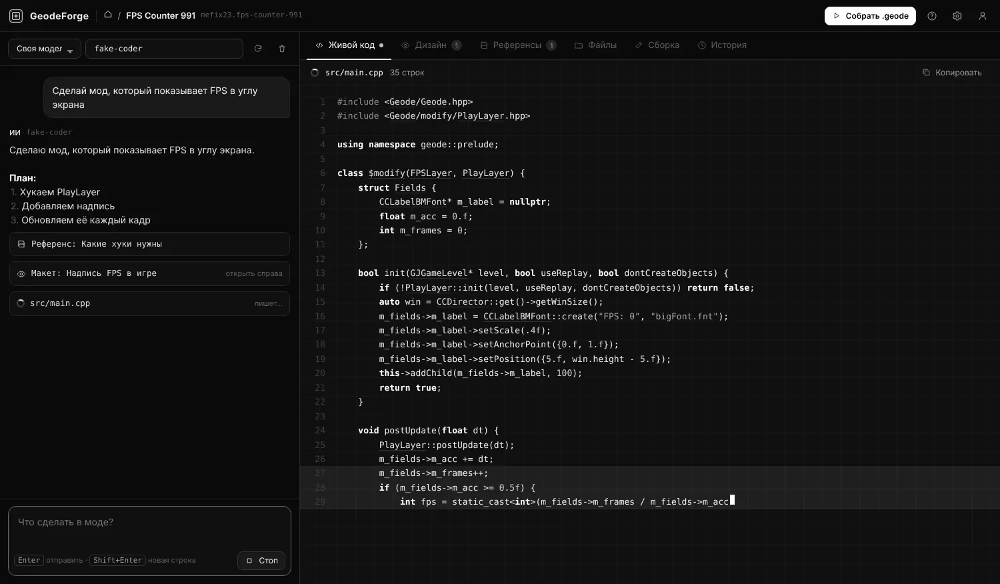

Моды для Geometry Dash.
Просто словами.
Опиши, что должен делать мод, — ИИ напишет код, нарисует макет и сам соберёт готовый .geode. Без программирования, без установки SDK.

Всё для мода — в одном окне
Слева чат с ИИ, справа большая рабочая область: код, дизайн, подсказки, файлы и сборка.
Любой ИИ на выбор
Claude, ChatGPT, Grok, Gemini, DeepSeek и сотни моделей через OpenRouter. Есть бесплатные и даже локальная ИИ без интернета.
Живой код
Строки появляются в реальном времени, пока ИИ пишет мод. Всё видно и можно поправить руками.
Сборка в облаке
Готовый .geode собирается на сервере и сам ставится в игру. Не нужны Geode SDK, CMake и Visual Studio.
ИИ чинит ошибки сам
Если сборка упала — ИИ читает ошибки, исправляет код и пересобирает. До трёх попыток подряд.
Макеты интерфейса
ИИ рисует, как будут выглядеть окна и кнопки мода, ещё до сборки.
История и откат
Любое изменение от ИИ можно отменить одной кнопкой. Ничего не потеряется.
От идеи до мода — за минуты
Опиши мод
«Сделай счётчик FPS в углу экрана».
ИИ пишет код
Файлы появляются справа, строка за строкой.
Сборка сама
Сервер собирает .geode, ошибки ИИ чинит сам.
Играй
Мод уже в папке игры. Перезапусти GD.
Один платёж — навсегда
Ключ приходит на почту сразу после оплаты. Никаких подписок.
Базовая
- Чат с любым ИИ
- Живой код и макеты
- Облачная сборка — 10 в день
- До 3 модов одновременно
- 2 шаблона для старта
- ИИ сам чинит ошибки сборки
Про
- Всё из Базовой
- Безлимит модов
- Облачная сборка — 40 в день
- Все шаблоны: редактор, HUD, настройки…
- ИИ сам чинит ошибки и пересобирает
- Будущие обновления
Уже есть Базовая? Перейти на Про за 200 ₽
Частые вопросы
Нужно ли уметь программировать?
Нет. Пишешь словами, что нужно, — ИИ делает код. Если что-то не так, просто скажи ему, что исправить.
ИИ входит в цену?
Ты подключаешь свой ключ ИИ. Есть бесплатные варианты: Gemini, бесплатные модели OpenRouter и Groq, или локальная модель через Ollama. Для самых сложных модов лучше всего Claude — оплачивается отдельно на сайте Anthropic.
Как я получу ключ?
Сразу после оплаты ключ покажется на экране и придёт на почту. В программе нажми «Активировать», введи почту, пароль и ключ.
Можно поставить на два компьютера?
Аккаунт работает на одном устройстве за раз. При входе с нового ПК придёт письмо или сообщение в Telegram с кнопкой «Подтвердить вход», а старый ПК выйдет из аккаунта.
Что нужно для работы?
Windows 10/11 и интернет. Для сборки модов ничего ставить не нужно — она идёт в облаке.
Что если ключ не пришёл?
Проверь «Спам». Если и там нет — напиши нам, указав почту, на которую оформлял покупку.